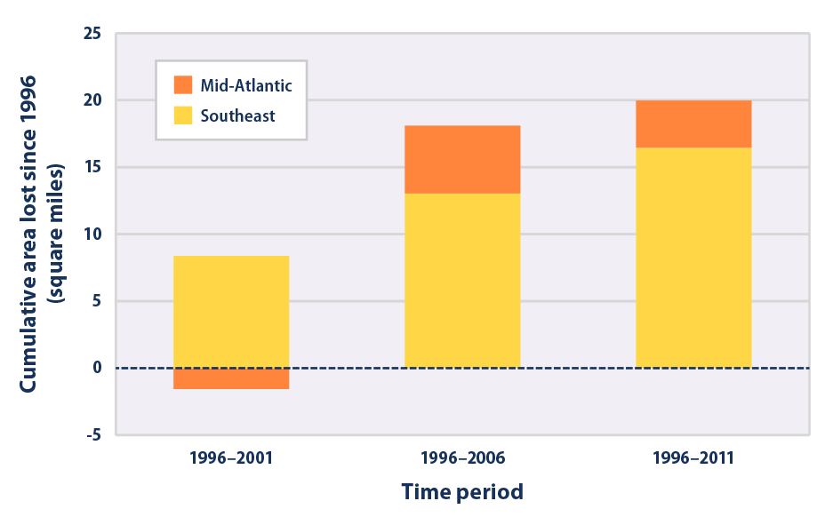
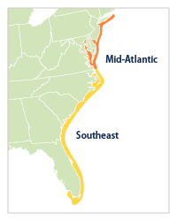
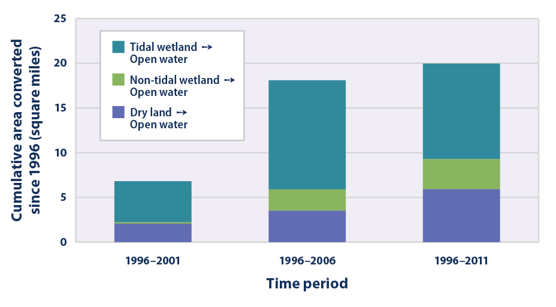

A Closer Look: Land Loss Along the Atlantic Coast
This feature provides a closer look at one consequence of sea level rise along the Atlantic coast: the conversion of land to open water.
- 
This graph shows the net amount of land converted to open water along the Atlantic coast during three time periods: 1996–2001, 1996–2006, and 1996–2011. The results are divided into two regions: the Southeast and the Mid-Atlantic (see locator map). Negative numbers show where land loss is outpaced by the accumulation of new land.
Data source: NOAA, 20132
Web update: May 2014 - 
This graph shows the net amount of land converted to open water along the Atlantic coast during three time periods: 1996–2001, 1996–2006, and 1996–2011. The results are divided into categories to show the type of land that has been converted to open water.
Data source: NOAA, 20133
Web update: May 2014
Key Points
- Roughly 20 square miles of dry land and wetland were converted to open water along the Atlantic coast between 1996 and 2011. (For reference, Manhattan is 33 square miles.) More of this loss occurred in the Southeast than in the Mid-Atlantic (see Figure 1).
- The data suggest that at least half of the land lost since 1996 has been tidal wetland. The loss of dry land appears to be larger than the loss of non-tidal wetland (see Figure 2).
Background
Rising sea level tends to make headlines during extreme events, like the storm surge that caused billions of dollars in damage during Hurricane Sandy in 2012. Yet rising sea level can also cause permanent changes in the landscape when it inundates (submerges) low-lying land. The Atlantic coast is particularly vulnerable because of low elevations and sinking shorelines.
The loss of coastal land can affect a large number of people, as nearly 10 million Americans live in a coastal floodplain.1 Coastal ecosystems are also at risk. These environments provide habitat for many kinds of plants and animals, as well as services that ensure people’s well-being, ranging from food production to recreation. Coastal wetlands provide valuable nursery, feeding, breeding, staging, and resting areas for many fish, shellfish, mammals, and birds, and they can buffer coastal areas against storm and wave damage.
As sea level rises, dry land can turn into wetland or open water. Existing wetlands can be threatened, too, as salt marshes, mangrove forests, and other coastal wetlands are at risk of being converted to open water.
The Sea Level indicator shows that sea level is rising overall in connection with climate change, but the rate of change varies by region, as do the effects. To provide a useful regional perspective, this feature examines the amount of land lost to sea level rise along the Atlantic coast from Florida to New York. It is based on satellite data that have been collected and analyzed at five-year intervals since 1996. Figure 1 divides the Atlantic coast into two regions for comparison, while Figure 2 shows the different types of land that have been lost.
Notes
Measurements of the change in coastal land depend on land cover and elevation data, which have significant limits in terms of accuracy and precision. Some results are field-checked for accuracy. The coastal land cover data are routinely compiled by the National Oceanic and Atmospheric Administration’s Coastal Change Analysis Program, and they represent the federal government’s most comprehensive set of data on land use and land cover in the coastal zone.
Sea level rise is not the only factor that contributes to the loss of coastal land. In addition to the natural sinking of the shoreline in some areas, such as the Mid-Atlantic, coastal land loss has been made worse by human activities such as navigation and flood control structures that block wetland migration or the movement of sediment; withdrawal of ground water, oil, or natural gas in some regions; and boat traffic that accelerates wetland erosion.4 Natural processes unrelated to current sea level rise can also cause shores to erode.
Data Sources
This feature is based on land cover data from the Coastal Change Analysis Program, which is coordinated by the National Oceanic and Atmospheric Administration. For more information about this program, visit: https://coast.noaa.gov/digitalcoast/?redirect=301ocm.
Technical Documentation
References
1. Crowell, M., K. Coulton, C. Johnson, J. Westcott, D. Bellomo, S. Edelman, and E. Hirsch. 2010. An estimate of the U.S. population living in 100-year coastal flood hazard areas. J. Coastal Res. 26(2):201–211.
2. NOAA (National Oceanic and Atmospheric Administration). 2013. Coastal Change Analysis Program. Accessed December 2013. https://coast.noaa.gov/dataregistry/search/collection/info/ccapregional?redirect=301ocm.
3. NOAA (National Oceanic and Atmospheric Administration). 2013. Coastal Change Analysis Program. Accessed December 2013. https://coast.noaa.gov/dataregistry/search/collection/info/ccapregional?redirect=301ocm.
4. Titus, J.G., E.K. Anderson, D.R. Cahoon, S. Gill, R.E. Thieler, and J.S. Williams. 2009. Coastal sensitivity to sea-level rise: A focus on the Mid-Atlantic region. U.S. Climate Change Science Program and the Subcommittee on Global Change Research. https://downloads.globalchange.gov/sap/sap4-1/sap4-1-final-report-all.pdf.
Learn about other indicators in this section